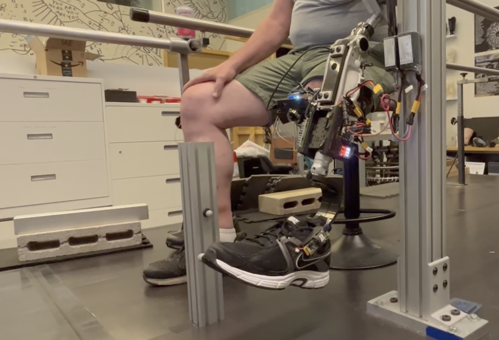

ResearchNeurally-Controlled Bionic Knee Prosthesis
MIT Media Lab — Biomechatronics Group
Built and upgraded a backup prosthetic leg. Solved a critical encoder failure using braided signal routing and ferrites. Enhanced foot feedback system in C++. Facilitated testing, data collection, and created data processing scripts.
📝 Co-Authored Publication in Science